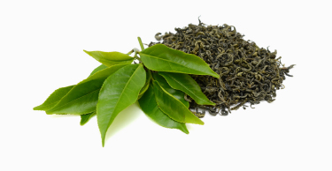

Matcha Ko-jin
La joya de tu bienestar
El corazón de los mágicos campos de té da origen a Ko-jin un Matcha cultivado en Uji.
Hojas recolectadas una vez al año con el mayor cuidado y secado lento para tener un producto único.
Pack ritual por 60€
El corazón de los mágicos campos de té da origen a Ko-jin un Matcha cultivado en Uji.
Hojas recolectadas una vez al año con el mayor cuidado y secado lento para tener un producto único.
Pack ritual por 60€
Ten energía pero con calma, mejora tu estado de animo, relaja tu mente y mantente saludable.
Originario de Uji , hojas recogidas a mano con el mayor cuidado, secadas al sol y trituradas en molino de piedra.
Una ceremonia que te acerca a la cultura japonesa, realizada con elegancia centrada en tu cuidado.